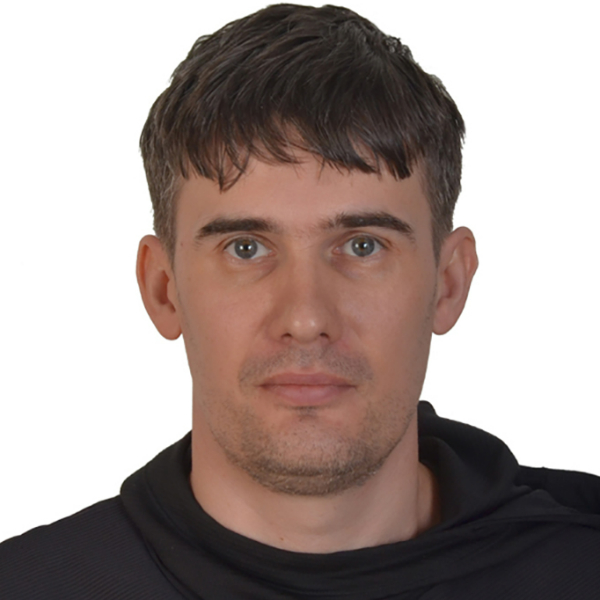

Более 10 лет опыта в запуске, модернизации и управлении IT-инфраструктурой организаций. Администрирую Linux и Windows, настраиваю высоконагруженные кластеры, внедряю мониторинг и автоматизацию. Уверенно работаю в условиях 99% SLA.

Администрирую Debian, Ubuntu, CentOS, Alma, Astra, OsNova и Windows Server 2008–2019. Обеспечиваю стабильность и безопасность серверной инфраструктуры.
Пишу скрипты на Bash, PowerShell и Python для автоматизации рутинных задач, деплоя и мониторинга. Снижаю ручной труд и количество ошибок.
Настраиваю Zabbix, ЦКК, ЦУП. Обеспечивал 99% SLA для электронного документооборота с 20 000 пользователей.
Разворачиваю и администрирую кластеры PostgreSQL (Patroni, Percona), MariaDB, MSSQL. Настраиваю HAProxy, ETCD, резервное копирование.
Управляю виртуализацией (VMware, VirtualBox, QEMU-KVM), облачными сервисами и балансировкой нагрузки. Использую Terraform для IaC.
Настраиваю Firewall, Active Directory, Group Policy, UFW, Kerio. Контролирую доступ и обеспечиваю защиту периметра сети.
Управление IT ресурсами бизнеса
Повышение квалификацииIT Юрист
Диплом магистраМатематик, Системный программист
Диплом специалиста